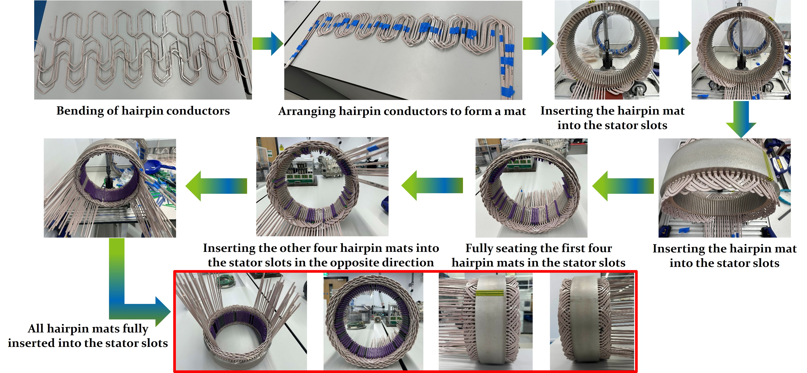
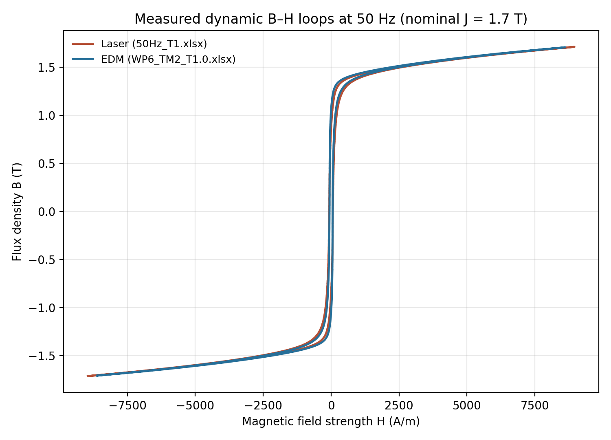

Electrical machines research
Electrical Machines for Future Transport.
Connecting machine architecture, advanced windings and magnetic materials for electric vehicles, aircraft propulsion and robotics.
Machine architecture
Advanced Electrical MachinesNew architectures for electric motor design.
Designing electrical machines for electric vehicles, aircraft propulsion and robot joint applications. The research spans SPM, IPMSM, PMa-SynRM, FI-IPMSM and VFI-IPMSM topologies.

Selected applications
- 1 MW
Aircraft electric propulsion
Surface-mounted permanent magnet machines with a five-stage Halbach array.
- 200 kW
High-speed generation
Micro-turbine generators designed for high-speed operation.
- 150 kW
Electric vehicle traction
IPMSM and axial-flux permanent magnet traction motor architectures.
Conductor architecture
Advanced Winding TechnologyShaping conductors for better machines.
Hairpin winding, continuous hairpin winding, Litz wire and edgewise coils. Connecting conductor geometry and winding layout with AC losses, current sharing and practical manufacturing.
Hairpin & continuous hairpin
Winding layouts, parallel-path balance and high-frequency copper losses, including sword-wound and flat-wound configurations.
Litz wire
Conductor selection and the trade-off between AC loss, slot utilisation and machine power density.
Edgewise coils
Formed-conductor architectures considered alongside electromagnetic performance and manufacturing requirements.

Materials & manufacturing
Advanced Materials &
Additive ManufacturingConnecting material behaviour with design freedom.
Understanding how materials and manufacturing processes shape machine performance, from electrical-steel characterisation to opportunities in additive manufacturing.

Magnetic material characterisation
Measured B–H behaviour and iron losses to understand electrical-steel performance under operating conditions.
Manufacturing effects
Connecting cutting-induced magnetic degradation with torque, losses and efficiency at machine level.
Additive manufacturing
A research direction for new geometries and integrated machine components, informed by material properties and electromagnetic constraints.
Research collaboration
From a design question
to engineering insight.
I welcome discussions on electrical machines, winding technologies, magnetic materials and collaborative research.
Get in touchAbout my research background